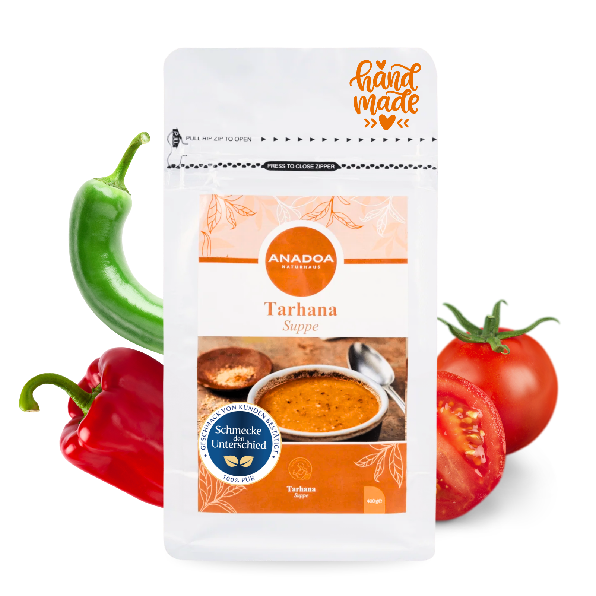

Klassische Tarhana Suppe
Fermentiert nach traditionellem anatolischem Rezept. Cremig, probiotisch und aus reinsten Zutaten – in 10 Minuten auf dem Tisch.
- Natürlich fermentiert – reich an Probiotika
- Ohne Geschmacksverstärker & Palmöl
- Handwerklich in Anatolien hergestellt
- Zubereitung in 10 Minuten

Was ist Klassische Tarhana Suppe?
Tarhana (türkisch: Tarhana Çorbası) ist die fermentierte Trockensuppe Anatoliens – eines der ältesten Convenience-Foods der Menschheitsgeschichte und zugleich eines der nährstoffreichsten. Sie entsteht aus der Verbindung von Weizenvollkornmehl, frischem Schafsjoghurt, sonnengereiften Tomaten, roter und grüner Capia-Paprika sowie frischen Kräutern wie Minze. Diese Zutaten werden zu einem Teig geknetet, fermentiert, sonnengetrocknet und zu Pulver gemahlen.
Das Ergebnis: Ein gold-oranger Wirkstoff, der sich in Minuten zu einer samtig-cremigen, unverwechselbar säuerlich-herzhaften Suppe verwandelt – voller Probiotika, Ballaststoffe und anatolischem Charakter.
Herkunft & Geschichte: 1.200 Jahre alte Tradition
Die Geschichte der Tarhana beginnt bei den nomadischen Turkvölkern Zentralasiens (ca. 600–900 n. Chr.). Diese Völker lebten von langen Wanderungen und benötigten Lebensmittel, die ohne Kühlung über Monate haltbar blieben. Die Lösung: Joghurt, das wichtigste Nahrungsmittel, wurde mit Mehl und Gemüse kombiniert, fermentiert und in der Sonne getrocknet. Das Ergebnis war Tarhana – das erste „Instantgericht" der Geschichte.
Als die Seldschuken und später die Osmanen Anatolien besiedelten, wurde Tarhana zur nationalen Volkssuppe schlechthin. Jede Provinz entwickelte ihre eigene Variante. Die Klassische Tarhana folgt der milden ägäischen Tradition – cremig, joghurtreich und mild im Geschmack. Sie ist bis heute das Familienessen par excellence in türkischen Haushalten.
Der Legende nach leitet sich der Name vom osmanischen „Dar Hane Çorbası" (Suppe des armen Hauses) ab. Ein inkognito reisender Sultan wurde von einer armen Bäuerin mit dieser Suppe beköstigt – und war so begeistert, dass das Gericht seinen Weg in alle Gesellschaftsschichten fand.
Herstellung: Der mehrtägige Fermentationsprozess
Die Herstellung echter, handwerklicher Tarhana ist kein schneller Prozess – sie ist ein Ritual. Bei Anadoa Naturhaus folgen wir Schritt für Schritt dem traditionellen anatolischen Verfahren:
- Zutaten vorbereiten: Frische Tomaten, Capia-Paprika, Zwiebeln, Knoblauch und Minze werden geröstet und püriert. Dazu kommt frischer, vollmundiger Schafsjoghurt und Weizenvollkornmehl.
- Teig kneten: Alle Zutaten werden zu einem festen, homogenen Teig geknetet.
- Fermentation (5–10 Tage): Der Teig ruht abgedeckt bei Raumtemperatur. Täglich wird er von Hand durchgeknetet, damit Luft entweicht. Milchsäurebakterien der Gattungen Lactobacillus und Pediococcus vermehren sich und verleihen der Tarhana ihre charakteristische Säure und ihren vielschichtigen Geschmack.
- Sonnentrocknung: Der fermentierte Teig wird in Stücke gebrochen und auf sauberen Tüchern im direkten Sonnenlicht getrocknet – oft über 3–5 Tage.
- Mahlen & Sieben: Die trockenen Brocken werden fein gemahlen und gesiebt, bis ein gleichmäßiges, feines Pulver entsteht.
Kein Konservierungsstoff. Keine Hitzebehandlung. Kein Zusatz. Nur fermentierte Natur.
Gesundheitliche Vorteile: Mehr als nur eine Suppe
Tarhana ist wissenschaftlich anerkanntes Functional Food. Ihre Zusammensetzung macht sie zu einem der nährstoffreichsten Lebensmittel der traditionellen Küche:
- Probiotika (Lactobacillus, Pediococcus): Die beim Fermentieren gebildeten Milchsäurebakterien überleben teilweise die Zubereitung und kolonisieren den Darm. Sie unterstützen die Darmflora, stärken das Immunsystem und reduzieren Entzündungsmarker.
- Erhöhte Mineralstoffaufnahme: Die Fermentation baut Phytinsäure im Vollkornweizen ab. Dadurch werden Zink, Eisen und Magnesium bis zu 50% besser vom Körper aufgenommen als aus unfermentiertem Mehl.
- Vollständiges Aminosäureprofil: Die Kombination aus Weizenvollkorn (reich an Methionin) und Schafsjoghurt (reich an Lysin) ergibt ein fast vollständiges Aminosäureprofil – ungewöhnlich für ein pflanzlich-basiertes Lebensmittel.
- Lycopin & Capsaicin: Die reifen Tomaten und Paprika liefern konzentriertes Lycopin (Antioxidans) und Capsaicin (entzündungshemmend, stoffwechselaktivierend).
- Vitamin B-Komplex: Durch die mikrobielle Aktivität beim Fermentieren werden B2 (Riboflavin) und B12 leicht angereichert.
In Anatolien ist Tarhana das traditionelle Hausmittel Nr. 1 bei Erkältungen, Magenbeschwerden, Erschöpfung und nach Antibiotikaeinnahmen – nicht ohne Grund.
Regionale Varianten: Wo kommt unsere Tarhana her?
Nicht alle Tarhanas sind gleich. Die Türkei allein hat über 40 regional anerkannte Tarhana-Varianten. Hier die wichtigsten:
- İzmir / Ägäische Tarhana (Unsere Basis): Die hellste, cremigste Variante. Viel Schafsjoghurt, wenig Schärfe, viel Minze. Typisch für die ägäische Küche rund um Izmir und Manisa – genau unser Rezept.
- Konya Tarhana: Dunkler, mit viel Vollkornmehl und getrockneter Paprika. Herzhafter und robuster Geschmack.
- Uşak Tarhana: Eine der bekanntesten regionalen Spezialitäten, mit geschützter geografischer Angabe (GGA). Wird aus grobem Weizenschrot hergestellt.
- Balkan-Trachanas: Griechische und serbische Varianten mit Ziegenmilch statt Joghurt – ein Zeugnis des gemeinsamen osmanischen Kulturerbes.
Zubereitung: So wird die perfekte Tarhana gekocht
Die klassische Methode – für 2 Portionen:
- 3 gehäufte EL Tarhana-Pulver in 200 ml kaltem Wasser auflösen und 10 Minuten quellen lassen.
- In einem Topf 1 EL Butter und 1 EL Olivenöl bei mittlerer Hitze schmelzen.
- Die eingeweichte Tarhana-Masse und ½ TL Salz hinzufügen, 2 Minuten unter Rühren anschwitzen.
- 700 ml heißes Wasser in mehreren Schüben einrühren, dabei nie aufhören zu rühren.
- Aufkochen, dann bei niedriger Hitze 8–10 Minuten sämig köcheln lassen.
- Mit frischer getrockneter Minze, Chiliflocken und einem Klecks Joghurt servieren.
💡 Tipp: Die Frühstückssuppe
In der Türkei ist Tarhana traditionell eine Morgensuppe. Heiß serviert mit Weißbrot ist sie ein vollständiges, proteinreiches Frühstück, das bis zum Mittag sättigt.
💡 Tipp: Die Kur-Version
Bei Erkältungen oder Magenprobleme: Tarhana mit einer Prise Kurkuma, Ingwerpulver und einem Tropfen Schwarzkümmelöl verfeinern. Das ist die anatolische Hausapotheke im Suppenteller.
Lagerung
Nach dem Öffnen das Tarhana-Pulver kühl, trocken und lichtgeschützt in einem luftdicht verschlossenen Glas- oder Keramikbehälter lagern. Feuchtigkeit ist der einzige Feind – trocken gelagerte Tarhana hält sich bis zu 18 Monate.
Inhaltsstoffe
Weizenvollkornmehl, Schafsjoghurt, Capia-Paprika, Minze, grüne Spitzpaprika, Kichererbsen, Bohnen, Milchrahm und Tomaten.
Enthält Gluten und Milch. Kann Spuren von Nüssen enthalten. Nicht für Personen mit Weizenallergie oder Laktoseintoleranz geeignet.
Häufig gestellte Fragen (FAQ)
Ist Tarhana
wirklich gesund?
Ja. Tarhana ist durch Fermentation probiotisch, durch Vollkorn ballaststoffreich und durch die Kombination der Zutaten reich an Vitaminen, Mineralstoffen und Antioxidantien. Wissenschaftliche Studien (z. B. aus der türkischen Lebensmitteltechnologie) bestätigen die probiotische Aktivität und den Nährwert von traditionell hergestellter Tarhana.
Ist Tarhana
für Kinder geeignet?
Die klassische Tarhana ist mild und wird in der Türkei traditionell als erste feste Nahrung für Kleinkinder verwendet. Sie ist ohne Schärfe und gut verträglich. Bitte beachten: Enthält Gluten und Milch – bei Unverträglichkeiten nicht geeignet.
Woher stammt
die Tarhana von Anadoa?
Unsere Tarhana wird in der ägäischen Region der Türkei (Izmir/Manisa) nach traditionellem Familienrezept in kleinen Chargen handwerklich hergestellt. Direkt von der Produktion zu Ihnen – ohne Umwege, ohne Geschmacksverstärker.
Wie lange
ist Tarhana-Pulver haltbar?
Bei sachgemäßer Lagerung (trocken, kühl, lichtgeschützt) ist Tarhana-Pulver 12–18 Monate haltbar. Das ist einer der großen Vorteile gegenüber frischen Suppen: Tarhana ist das ursprüngliche Haltbarmachungsverfahren der Natur.